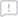

Файл
Правка
Вид
Библиотеки
Компиляция
Онлайн
Отладка
Инструменты
Окно
Справка
T
compute
compute
FUNCTION
compute
:
DINT
VAR_INPUT
t
:
INT
;
END_VAR
compute
:=
t
*
2
;
END_FUNCTION

Сообщения
Проблемы
0
0
0
Тип
Источник
Код
Описание
Место